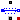
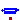
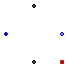
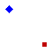

Extends from Modelica.Icons.VariantsPackage (Icon for package containing variants).
| Name | Description |
|---|---|
| Model considering voltage drop of carbon brushes | |
|  StrayLoad | Model of stray load losses dependent on current and speed |
|  Core | Model of core losses |

Model of voltage drop and losses of carbon brushes. This threephase model uses three DC Brush loss models.
Extends from Modelica.Electrical.MultiPhase.Interfaces.TwoPlug (Component with one m-phase electric port).
| Type | Name | Default | Description |
|---|---|---|---|
| Integer | m | 3 | Number of phases |
| BrushParameters | brushParameters | Brush loss parameters |
| Type | Name | Description |
|---|---|---|
| PositivePlug | plug_p | |
| NegativePlug | plug_n | |
| HeatPort_a | heatPort | Heat port of the resistor |
model Brush "Model considering voltage drop of carbon brushes"
extends Modelica.Electrical.MultiPhase.Interfaces.TwoPlug(final m=3);
parameter Machines.Losses.BrushParameters brushParameters
"Brush loss parameters";
Modelica.Thermal.HeatTransfer.Interfaces.HeatPort_a heatPort
"Heat port of the resistor";
DCMachines.Brush brush[3](each final brushParameters=brushParameters);
equation
connect(plug_p.pin, brush.p);
connect(brush.n, plug_n.pin);
for j in 1:m loop
connect(brush[j].heatPort, heatPort);
end for;
end Brush;

Stray load losses are modeled similar to standards EN 60034-2 and IEEE 512, i.e., they are dependent on square of current, but without scaling them to zero at no-load current.
For an estimation of dependency on varying angular velocity see:
W. Lang, Über die Bemessung verlustarmer Asynchronmotoren mit Käfigläufer für Pulsumrichterspeisung,
Doctoral Thesis, Technical University of Vienna, 1984.
The stray load losses are modeled such way that they do not cause a voltage drop in the electric circuit. Instead, the dissipated losses are considered through an equivalent braking torque at the shaft.
The stray load loss torque is
tau = PRef/wRef * (i/IRef)^2 * (w/wRef)^power_w
where i is the current of the machine and w is the actual angular velocity.
The dependency of the stray load torque on the angular velocity is modeled by the exponent power_w.
If it is desired to neglect stray load losses, set strayLoadParameters.PRef = 0 (this is the default).
Extends from Modelica.Electrical.MultiPhase.Interfaces.OnePort (Component with two electrical plugs and currents from plug_p to plug_n), Machines.Interfaces.FlangeSupport (Shaft and support).
| Type | Name | Default | Description |
|---|---|---|---|
| Integer | m | 3 | Number of phases |
| StrayLoadParameters | strayLoadParameters | Stray load loss parameters |
| Type | Name | Description |
|---|---|---|
| PositivePlug | plug_p | |
| NegativePlug | plug_n | |
| Flange_a | flange | Shaft end |
| Flange_a | support | Housing and support |
| HeatPort_a | heatPort | Heat port for modeling the heat flow |
model StrayLoad
"Model of stray load losses dependent on current and speed"
extends Modelica.Electrical.MultiPhase.Interfaces.OnePort(final m=3);
extends Machines.Interfaces.FlangeSupport;
parameter Machines.Losses.StrayLoadParameters strayLoadParameters
"Stray load loss parameters";
Modelica.SIunits.Current iRMS=Machines.SpacePhasors.Functions.quasiRMS(i);
Modelica.Thermal.HeatTransfer.Interfaces.HeatPort_a heatPort
"Heat port for modeling the heat flow";
equation
v = zeros(m);
if (strayLoadParameters.PRef<=0) then
tau = 0;
else
tau = -strayLoadParameters.tauRef*(iRMS/strayLoadParameters.IRef)^2*
smooth(1,if w >= 0 then +(+w/strayLoadParameters.wRef)^strayLoadParameters.power_w else
-(-w/strayLoadParameters.wRef)^strayLoadParameters.power_w);
end if;
heatPort.Q_flow = tau*w;
end StrayLoad;

Core losses can be separated into eddy current and hysteresis losses. The total core losses can thus be expressed as
P = PRef * (ratioHysteresis * (wRef / w) + 1 - ratioHysteresis) * (V / VRef)^2
where w is the actual angular remagnetization velocity and V is the actual voltage.
The term ratioHysteresis is the ratio of the hysteresis losses with respect to the total core losses for the reference voltage and frequency.
In the current implemenation hysteresis losses are not considered since complex numbers are not provided in Modelica.
Therefore, implicitly ratioHysteresis = 0 is set. For the voltage and frequency range with respect to Fig. 1,
the dependency of total core losses on the parameter ratioHysteresis is depicted in Fig. 2.
The current implementation has thus the drawback over a model that considers ratioHysteresis > 0:
w < wRef)
w > wRef)
 |
| Fig. 1: Voltage versus angular velocity |
 |
Fig. 2: Core losses versus angular velocity with parameter ratioHysteresis |
In the current implementation it is assumed that ratioHysteresis = 0. This parameter cannot be changed due to compatibility reasons.
| Type | Name | Default | Description |
|---|---|---|---|
| CoreParameters | coreParameters | ||
| Losses | |||
| AngularVelocity | w | Remagnetization angular velocity [rad/s] | |
| Type | Name | Description |
|---|---|---|
| SpacePhasor | spacePhasor | |
| HeatPort_a | heatPort | Heat port for modeling the heat flow |
model Core "Model of core losses" parameter Machines.Losses.CoreParameters coreParameters(final m=3);Machines.Interfaces.SpacePhasor spacePhasor; Modelica.Thermal.HeatTransfer.Interfaces.HeatPort_a heatPort "Heat port for modeling the heat flow"; input Modelica.SIunits.AngularVelocity w "Remagnetization angular velocity"; Modelica.SIunits.Conductance Gc "Variable core loss conductance"; protected Modelica.SIunits.AngularVelocity wLimit = noEvent(max(noEvent(abs(w)),coreParameters.wMin)) "Limited angular velocity"; equation if (coreParameters.PRef<=0) then Gc = 0; spacePhasor.i_ = zeros(2); else Gc = coreParameters.GcRef; // * (coreParameters.wRef/wsLimit*coreParameters.ratioHysteresis + 1 - coreParameters.ratioHysteresis); spacePhasor.i_ = Gc*spacePhasor.v_; end if; heatPort.Q_flow = -3/2*(+spacePhasor.v_[1]*spacePhasor.i_[1]+spacePhasor.v_[2]*spacePhasor.i_[2]);end Core;